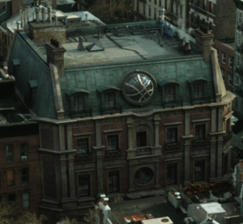
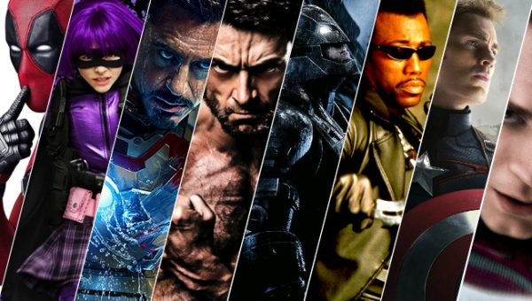

¿De dónde viene el nombre?
En los cómics de Marvel, es el lugar de residencia del Doctor Stephen Strange hechicero supremo del planeta tierra, y es ahí, donde el Doctor Strange tiene guardados algunos de los artefactos místicos más poderosos del universo Marvel.
¿Qué hacemos aquí?
Sanctum Sanctorum es un blog de películas, series, videojuegos, etc..., en el que sobre todo hablaremos de franquicias de superhéroes pero también abordaremos otras franquicias. Consulta aquí todas las novedades de Marvel, DC Comics y Star Wars en cine, series y también encontrarás noticias de series de las principales plataformas de streaming como Netflix, HBO, Amazon y Disney Plus.
